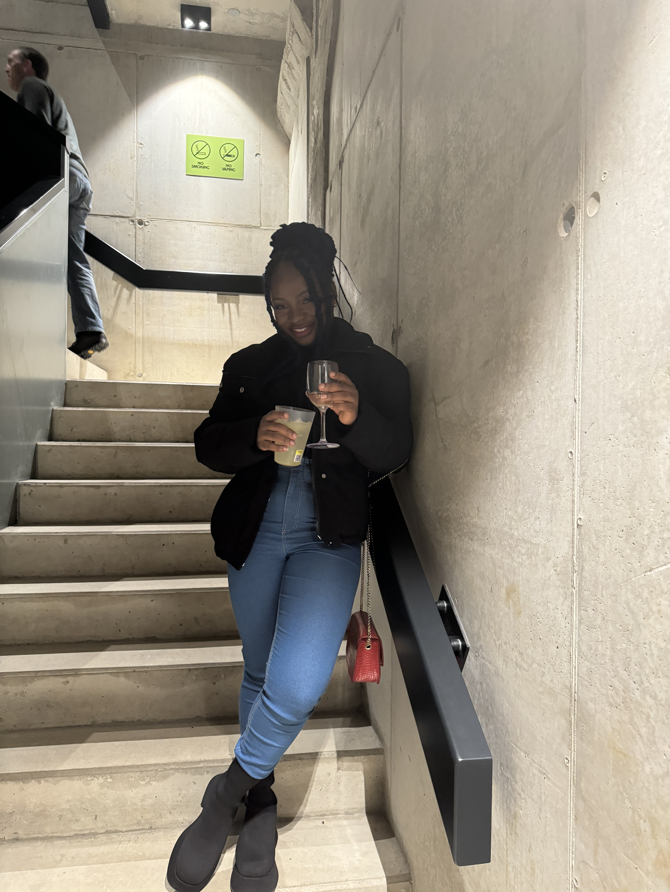

I can't say I have a favorite hobby because I enjoy doing some things that make me happy. I love traveling, hanging out with family and friends, making people smile, eating good food, listening to good music, and reading - give me some thriller/suspense and I love it. I love watching movies that feature Jason Statham (even if the show isn't all that 😂). I'm also improving my relationship with God and want to make anything that brings me close to him my hobby. Oh well, traveling and seeing new people, sights, images, etc is another way of appreciating God's creation. I guess I am already on the path😁. I have more to say, but I will have to end here 😉.
A picture of me!
This takes you back to the home page.